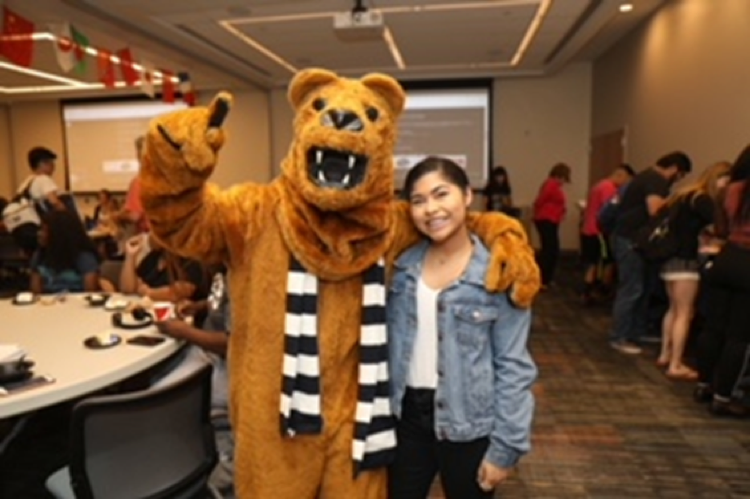
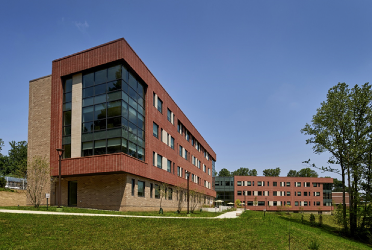
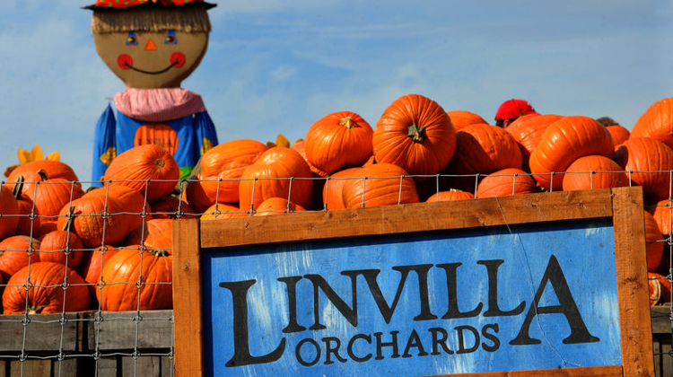

Penn State Brandywine百科全书
Penn State Brandywine是一所坐落于Media，距离宾夕法尼亚州首府费城32公里的一个小校区。因此无论是从费城国际机场还是纽约国际机场到学校都十分方便，从纽约坐车到学校仅需2个小时左右。校园附近有很多商场，中餐厅，既可以满足日常生活所需，也可以在吃腻了食堂的时候有其他的选择。
校园介绍
Penn State Brandywine大概680亩，虽然比起其他校区面积偏小，但是环境十分优美并且交通便利。校园内有公交大巴车站，可以坐它到费城中国城或者韩国城等几个中国留学生最经常去的地方。学校周围有各种Target, Acme, Wawa这样的超市，打个车7，8刀5分钟左右就到了，很方便。学校旁边还有一个正在建设的大shopping mall名叫Granite Run，预计1，2年之内就会完工。

Why Penn State Brandywine
相信绝大部分来分校念书的同学都是参加2+2这个项目的，在一个分校先读两年，再去主校University Park完成剩下的2年。那么为什么要选择Brandywine呢？
一：良好的学术氛围
Brandywine大约有1500名学生，在这个小校区几乎任何课程都是小班教学，平均一堂课的人数是20人，人少的好处就是更容易获得老师的关注，并且对于刚来到美国的学生，这样更能使你熟悉和融入美国的教育环境。
在我们校区的图书馆有免费的辅导，辅导的范围包含绝对多数的数学，英语，写作，物理方面等课程，甚至还有一些专业课的辅导如编程。辅导员大多是在该课拿到一定成绩的高年级学生或者有资历的老师，他们可以回答你不懂的问题，帮助你完成作业，查找资源等。一些辅导的课是可以修到1个学分的，只要按时出勤就可以很easy地拿到A，这样不仅可以对所修的课有所帮助，还可以提高自己的GPA。
二：理想的地理位置
Brandywine建于幽静的山谷之间，校园周围被群树环绕，学校附近有很多超市可以购买日常用品，校门前的一条公路可通达附近任何的超市，购物中心和离学校最近的Media小镇。从学校到费城（中国城）坐车仅需40分钟，飞机场距离学校也仅有30分钟。

三：多元的学习环境
作为各分校中学生文化背景最多样的校区，Penn State Brandywine的学生来自世界40多个国家。因此，你会结识到来自世界不同国家的同学，校内校外的各种会逐渐加深同学之间的友谊。
The things you may want to know
住宿
相信来到一所新学校大家最关心的应该就是住宿了，其实在Brandywine，住宿问题对于留学生来说很简单，因为我们有校舍，下面就来介绍一下校内住宿的问题。
Orchard Hall 是去年才建好的新宿舍楼，比起住校外要便宜些，去上课从宿舍到上课的地方普遍走路10分钟以内。
宿舍楼一共四层楼，有通用的厨房，洗衣房，学习室。做饭的话厨具要自己准备，洗衣房有洗衣机和烘干机，用lioncash里的钱就可以付款。
每个房间可以住两人，房间里每人都配有一套床，衣柜，写字桌，储物柜，微波炉和冰箱是一起用的。洗手间分布在楼层的各个位置，每个里面都有单独的房间洗澡。
在安全方面，Orchard Hall仅对申请了住校的学生开放，只有2申请了住宿的学生的校卡才能打开大门，但这并不意味着你不可以带你的朋友去你房间，事实上这点学校管的很松，所以在校住宿会给你的校园生活带来很多便利和快乐。
Orchard Hall—Penn State Brandywine’s Residence Hall
校外住宿 需要自己在网上找房源，看房子，不是很方便，学校周围没有可以走路到的住宅区，所以要在校外租房的话要考虑每日上学的问题，下面也列举几个历往走读留学生住宿的选择。
1.Stone Hill
地址：532 W Brookhaven Rd, PA
2.Madison Glen Mills
地址：Coventry Lane, Glen Mills, PA
3.West End Flats
地址：West Baltimore Avenue, Media, PA
Meal Plan 住校的学生都会被要求签订House & Food Service Contract，里面不仅包括住房，还有校内就餐。住校的学生都被要求购买学校的Meal Plan，就是学期前先存一笔钱进校卡，之后在食堂买食物的时候可以直接刷校卡。Meal Plan共有三种档次，可以根据平时在校吃饭的次数选择，钱不够了可以再充，多了的学期结束不会退款。
关于吃饭
学校周围餐厅不少，选择很多，不过都需要坐车去，下面为大家推荐几所校外附近的亚洲餐馆。
1.龍园(Margaret Kuo’s)
地址：位于距离学校10分钟车程的Media小镇，4-6W State St, Media, PA
介绍：高端上海餐馆，口味正宗，主上海菜系，但还有别的菜系和日本刺身等，菜的分量较大，消费大约20多刀一位。
2.上海园(Toms Dim Sum)
地址：位于离学校10分钟车程的Media小镇，13E State St, Media, PA 19063
介绍：同上海餐馆，口味较正宗，价格对比龍园要亲民不少，主要以上海的汤包，面条，饺子，烧菜为主，有外卖服务。
3.韩国城H-Mart
地址：7050 Terminal Sq, Upper Darby, PA
介绍：位于韩国城，距离学校大约20多分钟车程，H-Mart一楼是亚洲超市，二楼有韩国和日本的料理店，价格都比较实惠。
购物
1.King of Prussia Mall

作为东部最大的商城，King of Prussia一定是留学生购物的首选地点。各大品牌，奢侈品店都有在那里入驻，商城里还有来自世界各地的美食，边吃边玩基本上逛一天都逛不完，绝对是节假日购物的最佳场所，而且幸运的是这座东部最大的商城距离学校仅达30多分钟的车程，地址：160N Gulph Rd, King of Prussia, PA
2.Springfield Mall

Springfield Mall是距离学校最近的商场，里面有Macy, Target等，还有各种餐厅以及电影院，地址：Baltimore Pike, Springfield, PA
- Philadelphia Outlets
如同传统的奥特莱斯，里面有各大品牌的工厂店，费城奥莱的品牌并不算很多，但也是一个节假日打折时购物的好去处，地址：Lightcap Road, Pottstown, PA
同时学校周围还有很多超市可以让我们买到各种生活必需品，下面也一一列举一下：
1.Acme
地址：West Baltimore Pike, Media, PA
- Target
地址一：Hatton Drive, Glen Mills, PA（这家近一点）
地址二：Baltimore Pike, Springfield, PA
3.Wawa
地址：West Baltimore Pike, Wawa, PA
游玩
Tyler Arboretum: 515 Painter Road, Media, PA 19063;
以巨大的树屋和登山径闻名，学校有时会组织去，带学生id门票价$9
Longwood Gardens:1001 Longwood Rd, Kennett Square, PA 19063；

一个环境非常优美的园林，里面有许多喷泉，湖泊和一大片花丛地，到了晚上会有精彩的喷泉表演，尤其是到了接近圣诞的时候，树木会挂上各种装饰品十分漂亮，学校每年会组织国际生去这里游玩，很推荐的地方
Linvilla Orchards: 598 Linvilla Rd Media, PA 19063；
Penn State Brandywine在每年秋天丰收的时候都会组织去Linvilla Orchards游玩，传统项目包括hayride, bonfire和apple picking等
最后，祝愿即将到来的新生在Brandywine能够学业顺利，同时祝愿还未决定的意愿的新生都能在Penn State度过美好的大学时光